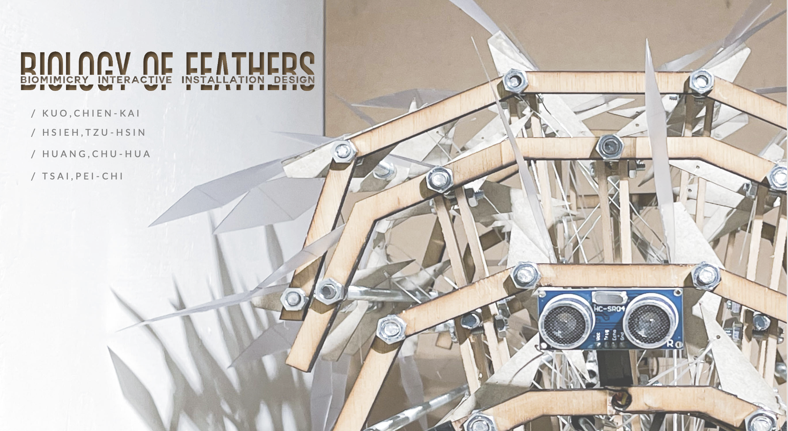
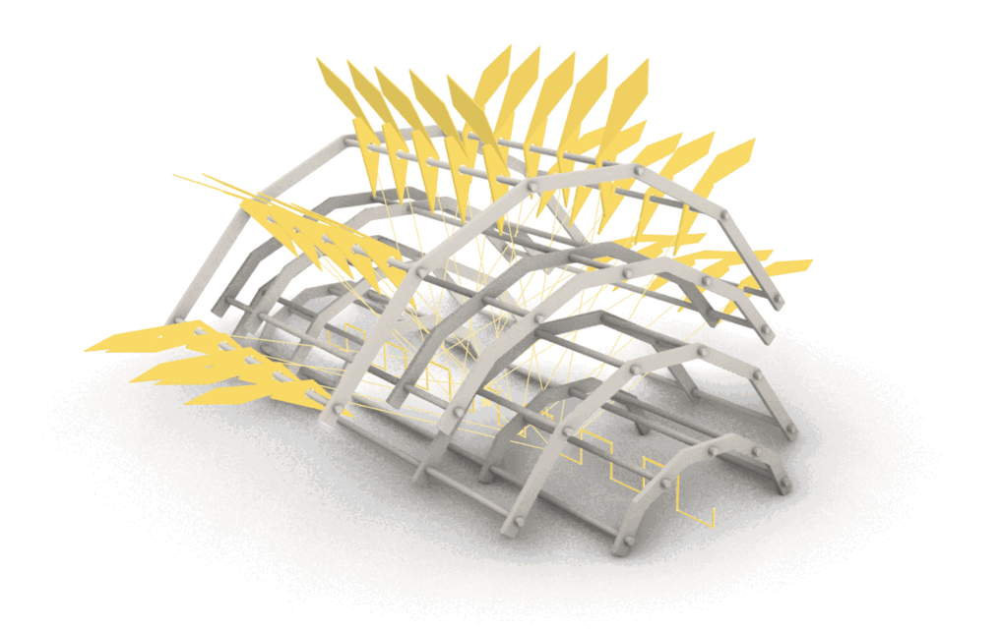
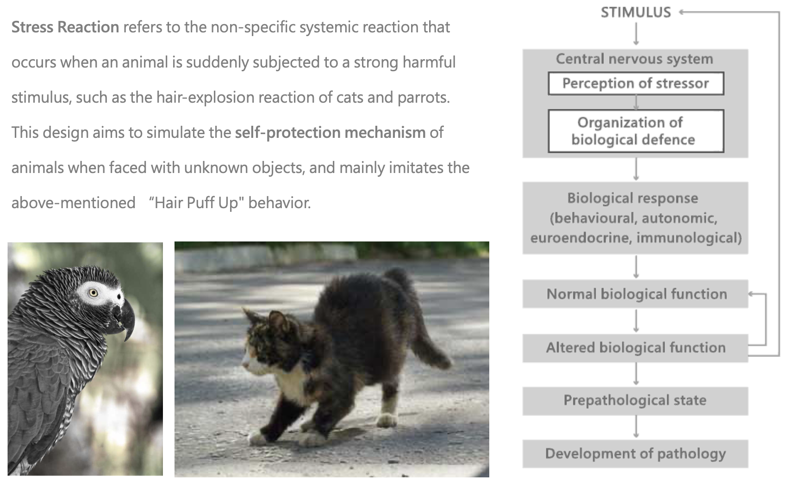
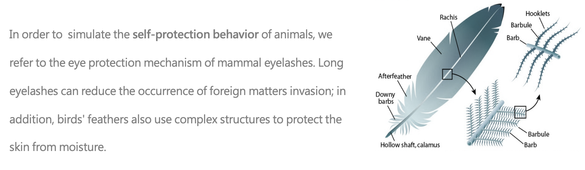
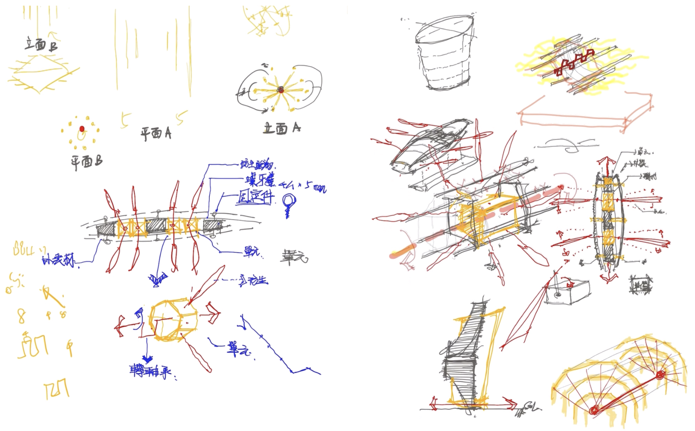
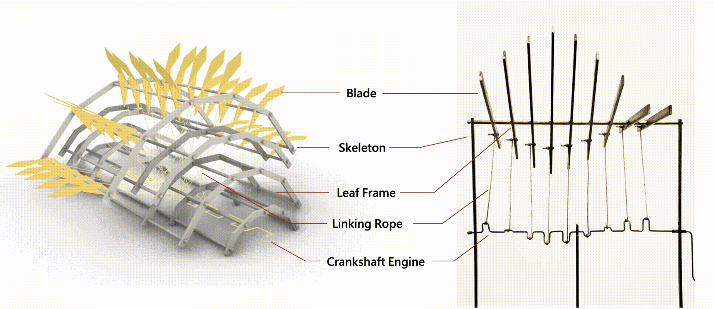
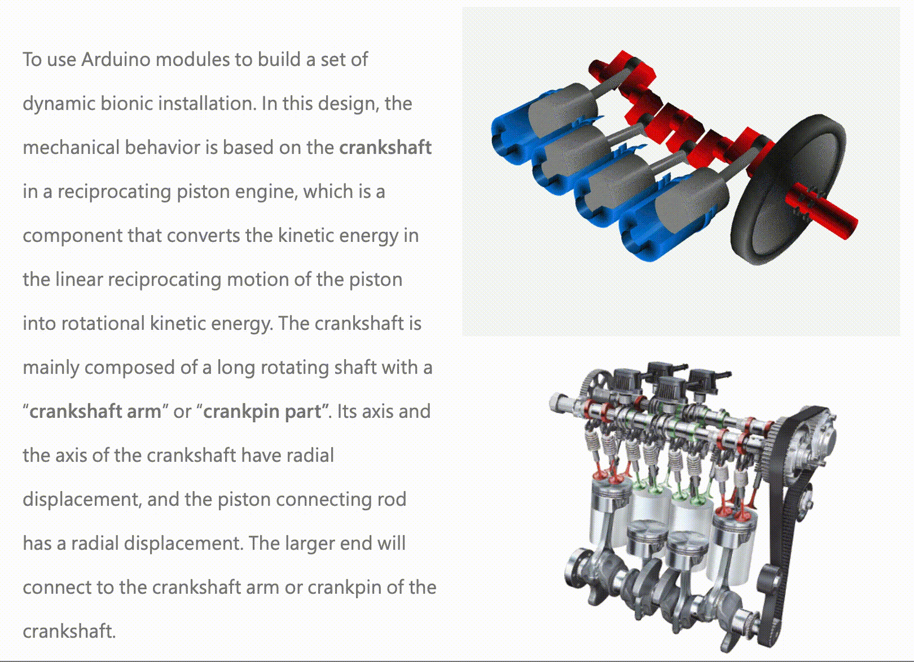
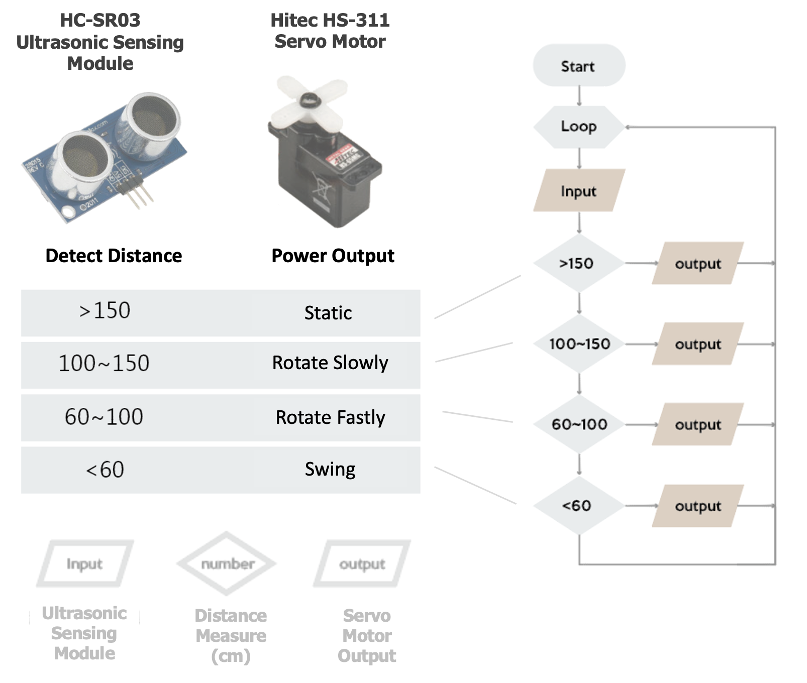
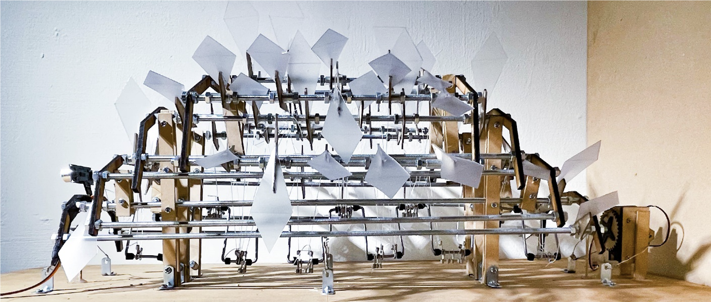

0. Interactive
Interface
with Arduino
# Sensor
# Internet of Thing
# Digital Interaction
# Human-Computer Interaction
A Bionic Interactive Installation seamlessly integrates art and
technology, combining bionics with interactive elements in a physical space.
Inspired by biological principles, it dynamically responds to viewer engagement through
sensors and technology, creating an immersive experience. This form of installation art
delves into the intersection of nature and technology, employing visual, auditory, and potentially
IoT-driven components to convey a distinctive and thought-provoking narrative.
Essentially, it signifies a harmonious fusion of bionics and interactivity within a meticulously crafted artistic environment.
Through the use of a dynamic life-like structure, the installation aims to initiate discussions on
the variability and adaptability of space.
Ultimately, it aspires to achieve an architectural form that harmoniously coexists and adapts with its environment, fostering a tangible connection between art and the surrounding space.
1. Bionic
Concepts and
Biomechanics
# Biomimicry Design
# Dynamic Installation
# Mechanical Design
# Laser Cutting
Self-Protective Mechanism


Similar biological structures include the fur of warm-blooded animals.
These slender and complicated biological structures are all designed to protect the organism itself.
Therefore, we hope to imitate this detailed and structure to imitate the stress response of organisms - the
Self-Protection Mechanism.
Mechanical Design



Development Environment and Tools
Developement Platform
- Arduino IDE
- Rhinoceros 3D
- Autodesk AutoCAD
Development Component
- Arduino UNO R3
- Ultrasonic Sensing Module
- Servo Motor

In order to simulate the self-protection behavior of animals, this design uses Arduino's
ultrasonic sensing module
to detect the arrival of unknown objects and uses a servo motor to operate the crankshaft.
The
crankshaft
is linked through the rotation mechanism of different frequencies, so that the blades swing back and forth with different amplitudes and frequencies along with the pulling of the linking rope.
2.DESIGN PROCESS
with
Parameter
# Bionic Design
# Parametic Design
# Prototyping
# Grasshopper
We use Grasshopper for
parametric modeling
on the Rhino platform.
During the design process, the results of each component are simulated simultaneously through
parameter fine-tuning
on the 3D model. In this 3D model, we set the circle radius, height,
lateral expansion variation parameters of the skeleton, as well as the depth and height of
the crankshaft engine, the number of blades on the blade frame,
and simulated the rotation angle of the engine through the pull rod. When the engine rotates to various angles,
the swing of the blades and the path of the connecting rope.
We build a high-precision 3D model for
simulation and verification
purposes. Allows the crankshaft rotation to be directly displayed in the model to
verify
whether the lead rope will be interfered by the leaf frame and cause production failure.
3. User Testing
and Conclusion
# User Experience
# Spatial Perception
# Qualitative Analysis


An architect and computer engineer dedicated to crafting innovative
Human-Computer Interfaces that integrate the convergence of the digital
and physical realms.

Leave a comment